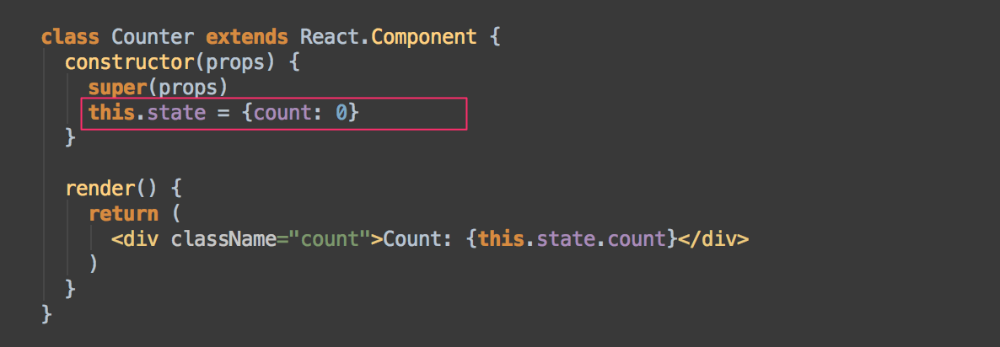
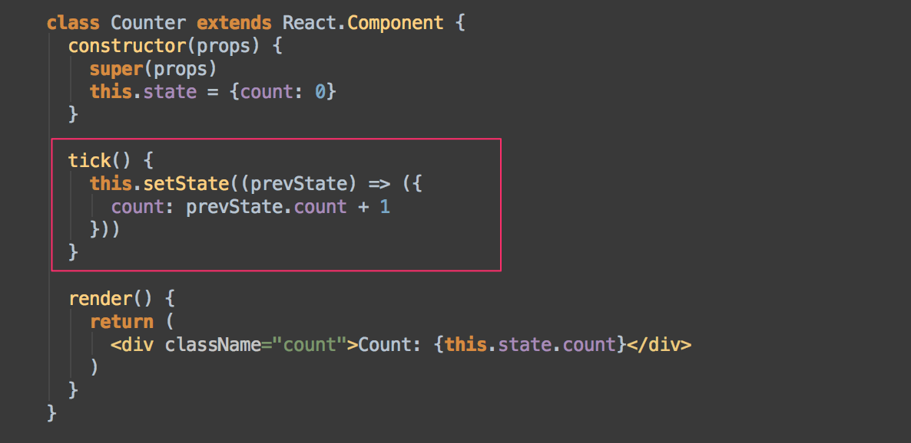
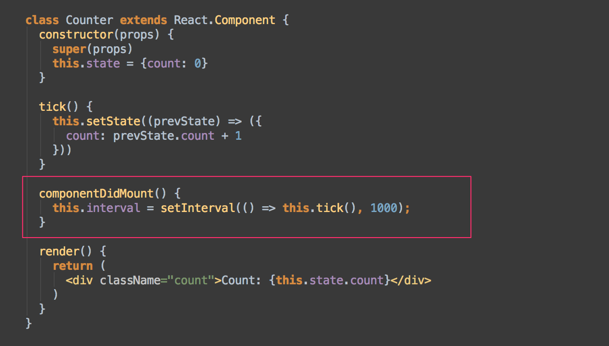
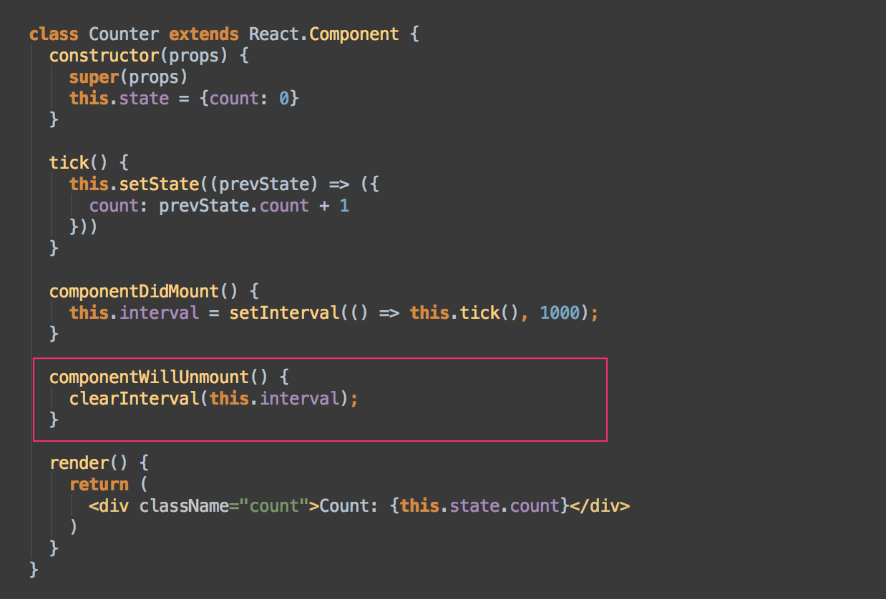

Methods prefixed with “will” are called right before something happens
Methods prefixed with “did” are called right after something happens.
These methods are called when an instance of a component is being created and inserted into the DOM:
An update can be caused by changes to props or state. These methods are called when a component is being re-rendered:
This method is called when a component is being removed from the DOM:
State is created in the constructor of the component
constructor() {
super();
this.state = {
temperature: 30
};
}
This is where state gets it’s initial data.
constructor(props) {
super(props)
this.state = {
temperature: this.props.temperature
};
}
The current temperature is: {this.state.temperature}
this.state.temperature = 30;this.setState({temperature: 30});
OR
this.setState((prevState, props) => {
return { temprature: prevState.temprature + 10 }
});Initialize state
Update count state
Keep updating count every second
Is counter component is ready ?
Clear garbage
Mark as Favourite